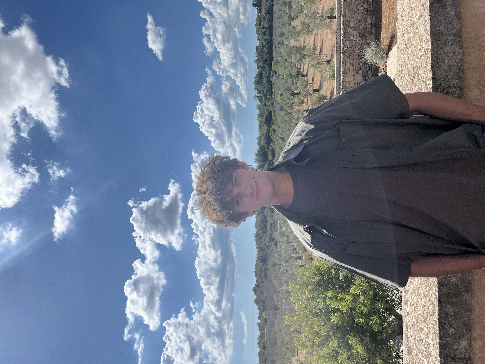

Joe Fullard's Resume
Personal Statement
I am a highly self-motivated individual with a passion for taking on new challenges and opportunities.
I enjoy learning new skills and feel comfortable working on my own initiative or as part of a team.
I have worked various part-time jobs that have enhanced my people skills and problem-solving abilities.
I'm looking to secure a long-term role within the tech industry, where I can make an impact on commercial projects,
while improving my skillset and develop myself as a person further
Skills
- Adobe Audition
- Logic Pro
- Ableton Live
- Microsoft Office
- HTML/CSS
Education
- 2021 - 2024 - Degree – Leeds Beckett University:
- BSc Music Technology – Upper second class honours
My degree covered experience in music recording/production, sound design, field recording, post-
production and game audio.
- 2019 – 2021 - A Level Results – Wolgarston Sixth Form:
- English Literature – A
- Biology - B
- Geography - B
- 2019 - GCSE Results – Wolgarston High School:
- Maths – 7 (A)
- English Language – 5 (C)
- English Literature – 7 (A)
- Geography - 7 (A)
- RE - 7 (A)
- Biology - 7 (A)
- Chemistry - 6 (B)
- Physics - 7 (A)
- French - 5 (C)
Work Experience
- June 2025 - Present - Manual Labourer (Part Time) – C Fullard Metals, Willenhall
- Metal sorter – weighing, grading, and sorting materials for dispatch to customers
- Cutting metal into smaller pieces on the hydraulic guillotine shears
- Burner operating Oxy Propane cutting equipment
- Assisting other colleagues with their tasks
- July 2023 – June 2025 – Bartender (Part Time) - Royal Park Pub, Leeds
- Serving customers in a fast-paced environment
- Handling cash and card payments
- Maintaining cleanliness and organization of the bar area
- Assisting with stock management and inventory
- Setting up and presenting pub quizzes
- July 2020 – February 2021 – Kitchen Assistant (Part Time) - The Staffordshire Grill, Brewood
- Food preparation
- Maintaining cleanliness and hygiene standards in the kitchen
- Assisting with stock management and inventory
- Washing dishes and kitchen equipment
Voluntary Experience
- April 2022 – Artist Liason - Gold Sounds Festival - Leeds
- Assisting bands carry music equipment onto/off stage
- • Making sure bands stuck to set timings
- October 2021 – Artist Liason - Live at Leeds Festival - Leeds
- Assisting bands carry music equipment onto/off stage
- • Making sure bands stuck to set timings
Interests
I am a very active person, whom enjoys going to the gym and martial arts.
I have trained in Muay Thai over the last 10 years, competing in numerous interclubs and even being
given the opportunity to train in Thailand. This sport has taught me mental perseverance and helped
me become more disciplined with myself. I have a passion for creating things,
self-teaching myself how to code with the hope of getting a job as a software developer
Contact